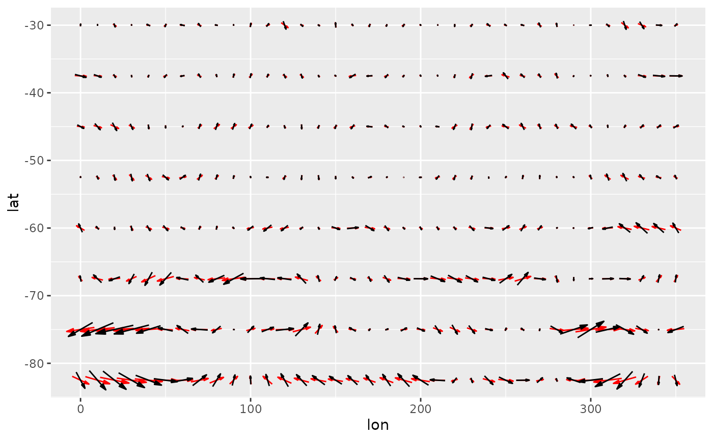
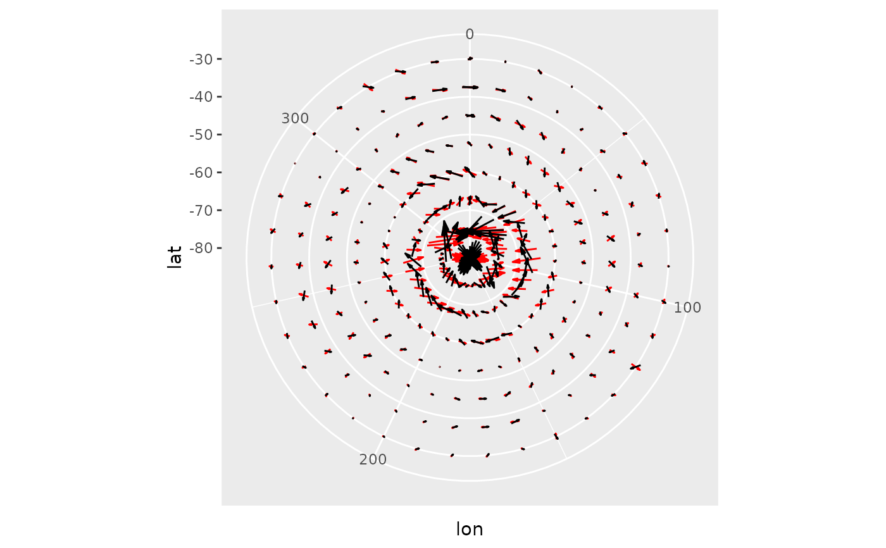
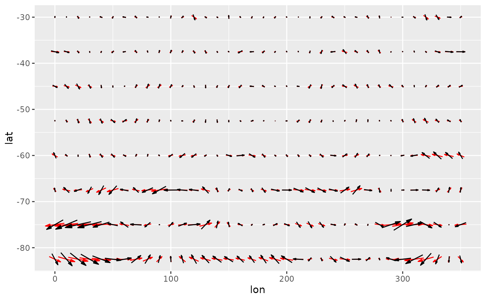
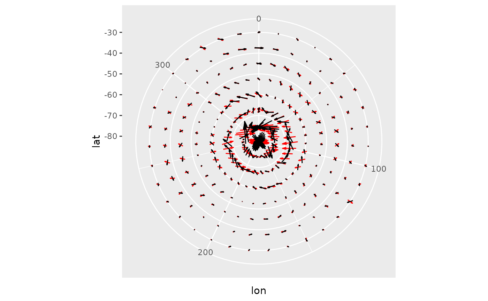
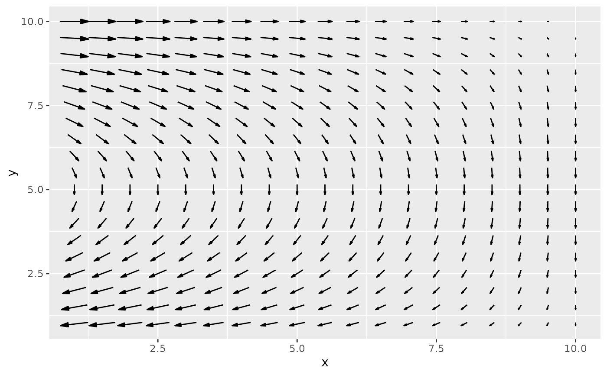
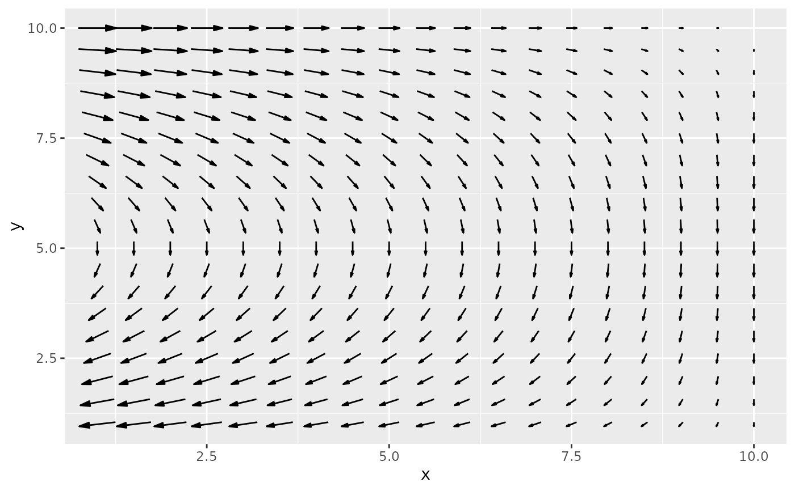

Parametrization of ggplot2::geom_segment either by location and displacement
or by magnitude and angle with default arrows. geom_arrow() is the same as
geom_vector() but defaults to preserving the direction under coordinate
transformation and different plot ratios.
geom_arrow(
mapping = NULL,
data = NULL,
stat = "arrow",
position = "identity",
...,
start = 0,
direction = c("ccw", "cw"),
pivot = 0.5,
preserve.dir = TRUE,
min.mag = 0,
skip = 0,
skip.x = skip,
skip.y = skip,
arrow.angle = 15,
arrow.length = 0.5,
arrow.ends = "last",
arrow.type = "closed",
arrow = grid::arrow(arrow.angle, grid::unit(arrow.length, "lines"), ends = arrow.ends,
type = arrow.type),
lineend = "butt",
na.rm = FALSE,
show.legend = NA,
inherit.aes = TRUE
)
geom_vector(
mapping = NULL,
data = NULL,
stat = "arrow",
position = "identity",
...,
start = 0,
direction = c("ccw", "cw"),
pivot = 0.5,
preserve.dir = FALSE,
min.mag = 0,
skip = 0,
skip.x = skip,
skip.y = skip,
arrow.angle = 15,
arrow.length = 0.5,
arrow.ends = "last",
arrow.type = "closed",
arrow = grid::arrow(arrow.angle, grid::unit(arrow.length, "lines"), ends = arrow.ends,
type = arrow.type),
lineend = "butt",
na.rm = FALSE,
show.legend = NA,
inherit.aes = TRUE
)Arguments
- mapping
Set of aesthetic mappings created by
aes(). If specified andinherit.aes = TRUE(the default), it is combined with the default mapping at the top level of the plot. You must supplymappingif there is no plot mapping.- data
The data to be displayed in this layer. There are three options:
If
NULL, the default, the data is inherited from the plot data as specified in the call toggplot().A
data.frame, or other object, will override the plot data. All objects will be fortified to produce a data frame. Seefortify()for which variables will be created.A
functionwill be called with a single argument, the plot data. The return value must be adata.frame, and will be used as the layer data. Afunctioncan be created from aformula(e.g.~ head(.x, 10)).- stat
The statistical transformation to use on the data for this layer, either as a
ggprotoGeomsubclass or as a string naming the stat stripped of thestat_prefix (e.g."count"rather than"stat_count")- position
Position adjustment, either as a string naming the adjustment (e.g.
"jitter"to useposition_jitter), or the result of a call to a position adjustment function. Use the latter if you need to change the settings of the adjustment.- ...
Other arguments passed on to
layer(). These are often aesthetics, used to set an aesthetic to a fixed value, likecolour = "red"orsize = 3. They may also be parameters to the paired geom/stat.- start
starting angle for rotation in degrees
- direction
direction of rotation (counter-clockwise or clockwise)
- pivot
numeric indicating where to pivot the arrow where 0 means at the beginning and 1 means at the end.
- preserve.dir
logical indicating whether to preserve direction or not
- min.mag
minimum magnitude for plotting vectors
- skip, skip.x, skip.y
numeric specifying number of gridpoints not to draw in the x and y direction
- arrow.length, arrow.angle, arrow.ends, arrow.type
parameters passed to grid::arrow
- arrow
specification for arrow heads, as created by
grid::arrow().- lineend
Line end style (round, butt, square).
- na.rm
If
FALSE, the default, missing values are removed with a warning. IfTRUE, missing values are silently removed.- show.legend
logical. Should this layer be included in the legends?
NA, the default, includes if any aesthetics are mapped.FALSEnever includes, andTRUEalways includes. It can also be a named logical vector to finely select the aesthetics to display.- inherit.aes
If
FALSE, overrides the default aesthetics, rather than combining with them. This is most useful for helper functions that define both data and aesthetics and shouldn't inherit behaviour from the default plot specification, e.g.borders().
Details
Direction and start allows to work with different standards. For the
meteorological standard, for example, use star = -90 and direction = "cw".
Aesthetics
geom_vector understands the following aesthetics (required aesthetics are in bold)
x
y
either mag and angle, or dx and dy
alphacolourlinetypesizelineend
See also
Other ggplot2 helpers:
MakeBreaks(),
WrapCircular(),
geom_contour2(),
geom_contour_fill(),
geom_label_contour(),
geom_relief(),
geom_streamline(),
guide_colourstrip(),
map_labels,
reverselog_trans(),
scale_divergent,
scale_longitude,
stat_na(),
stat_subset()
Examples
library(data.table)
library(ggplot2)
data(seals)
# If the velocity components are in the same units as the axis,
# geom_vector() (or geom_arrow(preserve.dir = TRUE)) might be a better option
ggplot(seals, aes(long, lat)) +
geom_arrow(aes(dx = delta_long, dy = delta_lat), skip = 1, color = "red") +
geom_vector(aes(dx = delta_long, dy = delta_lat), skip = 1) +
scale_mag()
 data(geopotential)
geopotential <- copy(geopotential)[date == date[1]]
geopotential[, gh.z := Anomaly(gh), by = .(lat)]
#> lon lat lev gh date gh.z
#> <num> <num> <int> <num> <Date> <num>
#> 1: 0.0 -22.5 700 3163.839 1990-01-01 13.67219
#> 2: 2.5 -22.5 700 3162.516 1990-01-01 12.34968
#> 3: 5.0 -22.5 700 3162.226 1990-01-01 12.05939
#> 4: 7.5 -22.5 700 3162.323 1990-01-01 12.15607
#> 5: 10.0 -22.5 700 3163.097 1990-01-01 12.93024
#> ---
#> 4028: 347.5 -90.0 700 2715.936 1990-01-01 0.00000
#> 4029: 350.0 -90.0 700 2715.936 1990-01-01 0.00000
#> 4030: 352.5 -90.0 700 2715.936 1990-01-01 0.00000
#> 4031: 355.0 -90.0 700 2715.936 1990-01-01 0.00000
#> 4032: 357.5 -90.0 700 2715.936 1990-01-01 0.00000
geopotential[, c("u", "v") := GeostrophicWind(gh.z, lon, lat)]
#> lon lat lev gh date gh.z u v
#> <num> <num> <int> <num> <Date> <num> <num> <num>
#> 1: 0.0 -22.5 700 3163.839 1990-01-01 13.67219 NA 1.08181190
#> 2: 2.5 -22.5 700 3162.516 1990-01-01 12.34968 NA 0.55189199
#> 3: 5.0 -22.5 700 3162.226 1990-01-01 12.05939 NA 0.06625043
#> 4: 7.5 -22.5 700 3162.323 1990-01-01 12.15607 NA -0.29800162
#> 5: 10.0 -22.5 700 3163.097 1990-01-01 12.93024 NA -0.75064329
#> ---
#> 4028: 347.5 -90.0 700 2715.936 1990-01-01 0.00000 NA 0.00000000
#> 4029: 350.0 -90.0 700 2715.936 1990-01-01 0.00000 NA 0.00000000
#> 4030: 352.5 -90.0 700 2715.936 1990-01-01 0.00000 NA 0.00000000
#> 4031: 355.0 -90.0 700 2715.936 1990-01-01 0.00000 NA 0.00000000
#> 4032: 357.5 -90.0 700 2715.936 1990-01-01 0.00000 NA 0.00000000
(g <- ggplot(geopotential, aes(lon, lat)) +
geom_arrow(aes(dx = dlon(u, lat), dy = dlat(v)), skip.x = 3, skip.y = 2,
color = "red") +
geom_vector(aes(dx = dlon(u, lat), dy = dlat(v)), skip.x = 3, skip.y = 2) +
scale_mag( guide = "none"))

# A dramatic illustration of the difference between arrow and vector
g + coord_polar()

# When plotting winds in a lat-lon grid, a good way to have both
# the correct direction and an interpretable magnitude is to define
# the angle by the longitud and latitude displacement and the magnitude
# by the wind velocity. That way arrows are always parallel to streamlines
# and their magnitude are in the correct units.
ggplot(geopotential, aes(lon, lat)) +
geom_contour(aes(z = gh.z)) +
geom_vector(aes(angle = atan2(dlat(v), dlon(u, lat))*180/pi,
mag = Mag(v, u)), skip = 1, pivot = 0.5) +
scale_mag()
data(geopotential)
geopotential <- copy(geopotential)[date == date[1]]
geopotential[, gh.z := Anomaly(gh), by = .(lat)]
#> lon lat lev gh date gh.z
#> <num> <num> <int> <num> <Date> <num>
#> 1: 0.0 -22.5 700 3163.839 1990-01-01 13.67219
#> 2: 2.5 -22.5 700 3162.516 1990-01-01 12.34968
#> 3: 5.0 -22.5 700 3162.226 1990-01-01 12.05939
#> 4: 7.5 -22.5 700 3162.323 1990-01-01 12.15607
#> 5: 10.0 -22.5 700 3163.097 1990-01-01 12.93024
#> ---
#> 4028: 347.5 -90.0 700 2715.936 1990-01-01 0.00000
#> 4029: 350.0 -90.0 700 2715.936 1990-01-01 0.00000
#> 4030: 352.5 -90.0 700 2715.936 1990-01-01 0.00000
#> 4031: 355.0 -90.0 700 2715.936 1990-01-01 0.00000
#> 4032: 357.5 -90.0 700 2715.936 1990-01-01 0.00000
geopotential[, c("u", "v") := GeostrophicWind(gh.z, lon, lat)]
#> lon lat lev gh date gh.z u v
#> <num> <num> <int> <num> <Date> <num> <num> <num>
#> 1: 0.0 -22.5 700 3163.839 1990-01-01 13.67219 NA 1.08181190
#> 2: 2.5 -22.5 700 3162.516 1990-01-01 12.34968 NA 0.55189199
#> 3: 5.0 -22.5 700 3162.226 1990-01-01 12.05939 NA 0.06625043
#> 4: 7.5 -22.5 700 3162.323 1990-01-01 12.15607 NA -0.29800162
#> 5: 10.0 -22.5 700 3163.097 1990-01-01 12.93024 NA -0.75064329
#> ---
#> 4028: 347.5 -90.0 700 2715.936 1990-01-01 0.00000 NA 0.00000000
#> 4029: 350.0 -90.0 700 2715.936 1990-01-01 0.00000 NA 0.00000000
#> 4030: 352.5 -90.0 700 2715.936 1990-01-01 0.00000 NA 0.00000000
#> 4031: 355.0 -90.0 700 2715.936 1990-01-01 0.00000 NA 0.00000000
#> 4032: 357.5 -90.0 700 2715.936 1990-01-01 0.00000 NA 0.00000000
(g <- ggplot(geopotential, aes(lon, lat)) +
geom_arrow(aes(dx = dlon(u, lat), dy = dlat(v)), skip.x = 3, skip.y = 2,
color = "red") +
geom_vector(aes(dx = dlon(u, lat), dy = dlat(v)), skip.x = 3, skip.y = 2) +
scale_mag( guide = "none"))

# A dramatic illustration of the difference between arrow and vector
g + coord_polar()

# When plotting winds in a lat-lon grid, a good way to have both
# the correct direction and an interpretable magnitude is to define
# the angle by the longitud and latitude displacement and the magnitude
# by the wind velocity. That way arrows are always parallel to streamlines
# and their magnitude are in the correct units.
ggplot(geopotential, aes(lon, lat)) +
geom_contour(aes(z = gh.z)) +
geom_vector(aes(angle = atan2(dlat(v), dlon(u, lat))*180/pi,
mag = Mag(v, u)), skip = 1, pivot = 0.5) +
scale_mag()
 # Sverdrup transport
library(data.table)
b <- 10
d <- 10
grid <- as.data.table(expand.grid(x = seq(1, d, by = 0.5),
y = seq(1, b, by = 0.5)))
grid[, My := -sin(pi*y/b)*pi/b]
#> x y My
#> <num> <num> <num>
#> 1: 1.0 1 -9.708055e-02
#> 2: 1.5 1 -9.708055e-02
#> 3: 2.0 1 -9.708055e-02
#> 4: 2.5 1 -9.708055e-02
#> 5: 3.0 1 -9.708055e-02
#> ---
#> 357: 8.0 10 -3.847341e-17
#> 358: 8.5 10 -3.847341e-17
#> 359: 9.0 10 -3.847341e-17
#> 360: 9.5 10 -3.847341e-17
#> 361: 10.0 10 -3.847341e-17
grid[, Mx := -pi^2/b^2*cos(pi*y/b)*(d - x)]
#> x y My Mx
#> <num> <num> <num> <num>
#> 1: 1.0 1 -9.708055e-02 -0.84478964
#> 2: 1.5 1 -9.708055e-02 -0.79785688
#> 3: 2.0 1 -9.708055e-02 -0.75092413
#> 4: 2.5 1 -9.708055e-02 -0.70399137
#> 5: 3.0 1 -9.708055e-02 -0.65705861
#> ---
#> 357: 8.0 10 -3.847341e-17 0.19739209
#> 358: 8.5 10 -3.847341e-17 0.14804407
#> 359: 9.0 10 -3.847341e-17 0.09869604
#> 360: 9.5 10 -3.847341e-17 0.04934802
#> 361: 10.0 10 -3.847341e-17 0.00000000
ggplot(grid, aes(x, y)) +
geom_arrow(aes(dx = Mx, dy = My))

# Due to limitations in ggplot2 (see: https://github.com/tidyverse/ggplot2/issues/4291),
# if you define the vector with the dx and dy aesthetics, you need
# to explicitly add scale_mag() in order to show the arrow legend.
ggplot(grid, aes(x, y)) +
geom_arrow(aes(dx = Mx, dy = My)) +
scale_mag()
# Sverdrup transport
library(data.table)
b <- 10
d <- 10
grid <- as.data.table(expand.grid(x = seq(1, d, by = 0.5),
y = seq(1, b, by = 0.5)))
grid[, My := -sin(pi*y/b)*pi/b]
#> x y My
#> <num> <num> <num>
#> 1: 1.0 1 -9.708055e-02
#> 2: 1.5 1 -9.708055e-02
#> 3: 2.0 1 -9.708055e-02
#> 4: 2.5 1 -9.708055e-02
#> 5: 3.0 1 -9.708055e-02
#> ---
#> 357: 8.0 10 -3.847341e-17
#> 358: 8.5 10 -3.847341e-17
#> 359: 9.0 10 -3.847341e-17
#> 360: 9.5 10 -3.847341e-17
#> 361: 10.0 10 -3.847341e-17
grid[, Mx := -pi^2/b^2*cos(pi*y/b)*(d - x)]
#> x y My Mx
#> <num> <num> <num> <num>
#> 1: 1.0 1 -9.708055e-02 -0.84478964
#> 2: 1.5 1 -9.708055e-02 -0.79785688
#> 3: 2.0 1 -9.708055e-02 -0.75092413
#> 4: 2.5 1 -9.708055e-02 -0.70399137
#> 5: 3.0 1 -9.708055e-02 -0.65705861
#> ---
#> 357: 8.0 10 -3.847341e-17 0.19739209
#> 358: 8.5 10 -3.847341e-17 0.14804407
#> 359: 9.0 10 -3.847341e-17 0.09869604
#> 360: 9.5 10 -3.847341e-17 0.04934802
#> 361: 10.0 10 -3.847341e-17 0.00000000
ggplot(grid, aes(x, y)) +
geom_arrow(aes(dx = Mx, dy = My))

# Due to limitations in ggplot2 (see: https://github.com/tidyverse/ggplot2/issues/4291),
# if you define the vector with the dx and dy aesthetics, you need
# to explicitly add scale_mag() in order to show the arrow legend.
ggplot(grid, aes(x, y)) +
geom_arrow(aes(dx = Mx, dy = My)) +
scale_mag()
 # Alternative, use Mag and Angle.
ggplot(grid, aes(x, y)) +
geom_arrow(aes(mag = Mag(Mx, My), angle = Angle(Mx, My)))
# Alternative, use Mag and Angle.
ggplot(grid, aes(x, y)) +
geom_arrow(aes(mag = Mag(Mx, My), angle = Angle(Mx, My)))